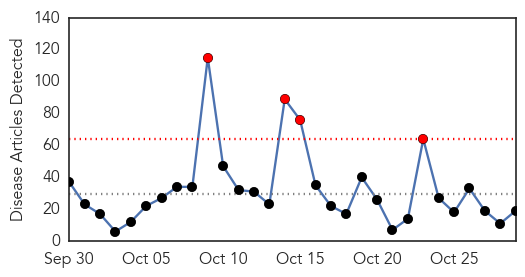
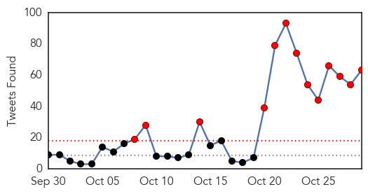
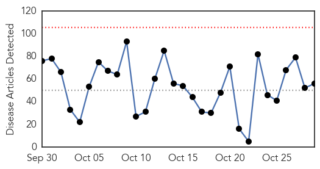
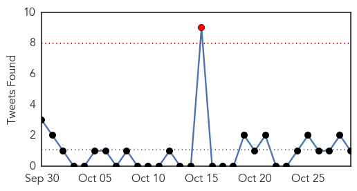

Ebola
30-Day Web Trend
4 alerts, 0 warnings

30-Day Twitter Trend
17 alerts, 0 warnings

Article Locations

Article Confidences

Top Articles:
- 0.998
- Study: Funerals Were Prime Places for Ebola Spread
- 0.998
- The Politics Behind The Ebola Crisis – Analysis
- 0.998
- ICG: The politics behind the Ebola crisis
- 0.962
- Guinea Records Three New Cases Of Ebola, Brings Total To Nine
- 0.937
- 67% of the people on Earth have this 'incurable' viral infection
- 0.899
- Like her father, Vanessa Kerry is reporting for duty. Her mission: Preventing the next outbreak.
- 0.880
- No good deed goes unpunished: After Ebola, Sierra Leone’s brave burial workers rejected, fear bleak future (PHOTOS)
- 0.847
- A fictional island, a cyclone and tough questions: how aid workers prepare for disaster
- 0.836
- Sierra Leone News: Guinea is a threat to Sierra Leone’s ebola freedom-CEO Palo Conteh « Awoko Newspaper
- 0.820
- Rare Psychological Support was Critical for Ebola Patients
- 0.805
- Ebola one year later
- 0.774
- US$1.7bn to Build Resilient Health System
- 0.734
- Cleveland Clinic unveils list of the 10 most important medical innovations for 2016
- 0.707
- Infectious Disease Cyber Detectives Keep Governments Accountable
- 0.686
- Why I cannot tell 'the African story'
- 0.681
- FG Mulls Regional Centre for Disease Control , Articles
- 0.632
- WHO gets it wrong again: As with SARS and H1N1, its processed-meat edict went too far
- 0.568
- LIBERIA: Dozens Of Orphans In West Point Receive Food And Clothing From More Than Me
- 0.537
- People already uses tablets as �a TV for every room in the house so Samsung built one worth watching
Top Tweets:
- 1.000
- ebola ebola virus symptoms treatment and prevention webmd - https://t.co/W8O3ayghKD ebola
- 0.999
- Virus Ebola: Medicago obtient un contrat du gouvernement canadien - https://t.co/F8XsyLehVZ ebola
- 0.999
- Key Messages - Ebola Virus Disease, West Africa - https://t.co/EtYnNR5tXa ebola
- 0.998
- Is ebola a lytic or lysogenic virus - https://t.co/7USlEcP2ry ebola
- 0.997
- Ebola cases - https://t.co/Gf4OHWrPDs ebola
- 0.995
- Ebola Warriorss - https://t.co/eeJH0QODxm ebola
- 0.995
- Ebola Naachii - https://t.co/WUAC74Cz4l ebola
- 0.993
- Deforestation 'may have started west Africa's Ebola outbreak' - https://t.co/M2oQjCNnJh ebola
- 0.990
- Penn Study Blocks Ebola Virus Budding by Regulating Calcium Signaling - https://t.co/bxnwVC3b1N ebola
- 0.987
- Guinea Agribusiness: Sector recovering after Ebola epidemic - https://t.co/j8gyDeGrb6 ebola
- 0.983
- No good deed goes unpunished: After Ebola, Sierra Leone's brave burial workers ... - Mail & Guardi... https://t.co/Vn30oqFJi2 ebola EVD
- 0.983
- America's Ebola Panic - https://t.co/mvmPk7wdJw ebola
- 0.982
- Guinea records new cases of Ebola - https://t.co/WylLNuC6h4 ebola
- 0.979
- Ebola patient is in isolation after Relapse - https://t.co/MBpFzsymMe ebola
- 0.979
- Ebola Lalala Song Mp3 - https://t.co/V47sKIY2h2 ebola
- 0.978
- YWCA Identifies With Ebola Widow, Widowers - https://t.co/ItAm9Aop3P ebola
- 0.978
- Dean to discuss world response to Ebola epidemic - https://t.co/To2b1Zy8Zq ebola
- 0.975
- MERS, Ebola, bird flu: Science's big missed opportunities - BusinessWorld Online Edition https://t.co/kgphMbOg90 ebola EVD
- 0.974
- 3 New Cases of Ebola Emerge in Guinea - https://t.co/It5bfXxOBh ebola
- 0.973
- No good deed goes unpunished: After Ebola, Sierra Leone's brave burial workers rejected, fear ... - https://t.co/epiIbG9wpg ebola
- 0.972
- Three new Ebola cases confirmed in Guinea - https://t.co/bt9yzRF0jT ebola
- 0.972
- Liberia: Gender Ministry Supporting 4000 Ebola Orphans - https://t.co/JaGy2bTmWr ebola
- 0.970
- Is Ebola Making a Comeback? - https://t.co/ZS1OGJuwS1 ebola
- 0.969
- Aethlon Medical's (NasdaqCM:AEMD) Biofiltration Platform Tackles Everything from Ebola to ... - https://t.co/U36mpK4wpr ebola
- 0.966
- Rare Psychological Support was Critical for Ebola Patients - https://t.co/eW8XWoODcd ebola
- 0.966
- Deforestation 'may have started west Africa's Ebola outbreak' - The Guardian https://t.co/47b4UMGcAk ebola EVD
- 0.965
- Ebola nurse is awarded medal for West Africa work - https://t.co/jhVCdlTGEp ebola
- 0.960
- Ebola volunteers needed - New Vision https://t.co/gi8MB2YksO ebola EVD
- 0.959
- Three new cases of Ebola recorded in Guinea - https://t.co/cqEZKnL3dC ebola
- 0.957
- Guinea records 3 new cases of Ebola, brings total to 9 - https://t.co/18hFwnwexk ebola
- 0.955
- Press Statement of the 553rd PSC meeting on Ebola and post-Ebola recovery efforts in the most ... - https://t.co/AcGXGw24z3 ebola
- 0.955
- Ebola one year later - https://t.co/NLIr1JgUCV ebola
- 0.954
- South reassures Bio of zero Ebola - https://t.co/qNCovnoA6v ebola
- 0.948
- A Conversation With - Abu Kamara, Ebola Active Case Finder - https://t.co/6GauAanJ0c ebola
- 0.945
- Working in an Ebola Protection Suit - https://t.co/nW6zbij6t0 ebola
- 0.944
- 3 New Cases of Ebola Emerge in Guinea | 9 in Total Infected - https://t.co/NUOh4BY6QO ebola
- 0.939
- Man tested for Ebola in La Coruña - https://t.co/LYkM04EY9k ebola
- 0.936
- Ebola: Expert tasks Nigerians on hygiene - https://t.co/s9qAr10iHF ebola
- 0.933
- Watchdog Says Army Ebola Contract Needs More Oversight - https://t.co/33CuKg1Jb2 ebola
- 0.933
- Guinea records three new cases of Ebola, brings total to nine - Reuters https://t.co/fa2YjU9lrD ebola EVD
- 0.931
- Beyond Ebola and Polio - https://t.co/iIomen7rAF ebola
- 0.926
- Guinea records three new cases of Ebola, brings total to nine - https://t.co/nUyLKkTJwl ebola
- 0.926
- Guinea records three new cases of Ebola, brings total to nine - https://t.co/AgSF4K6OFw ebola
- 0.912
- Study: Funerals Were Prime Places for Ebola Spread - MedPage Today https://t.co/TImAGbporO ebola EVD
- 0.909
- Study: Funerals Were Prime Places for Ebola Spread - https://t.co/bd2aui4GSr ebola
- 0.903
- Aethlon Medicals Biofiltration Platform Tackles Everything from Ebola to Cancer - https://t.co/6tbI3bHQSR ebola
- 0.897
- Aethlon Medical's Biofiltration Platform Tackles Everything from Ebola to Cancer: CEO James Joyce - https://t.co/8cUZP15zUE ebola
- 0.893
- The Politics Behind The Ebola Crisis – Analysis - https://t.co/inIW1Kg3W3 ebola
- 0.893
- Ebola Medal awarded to Weston-super-Mare nurse awarded for service in West Africa - https://t.co/UzvD6GUcWM ebola
- 0.884
- Three new Ebola cases recorded in Guinea - https://t.co/WVkbuVW1Ub ebola
Showing top 50 tweets...
Unknown
30-Day Web Trend
0 alerts, 0 warnings

30-Day Twitter Trend
0 alerts, 0 warnings

Article Locations

Article Confidences

Top Articles:
- 0.998
- Korea to delay declaring itself MERS-free
- 0.997
- DC Health Unit to administer flu shots Friday
- 0.984
- Flu vaccine will be more effective this winter, says Hong Kong's health chief
- 0.973
- Probably cilantro: Over 700 sick from Cyclospora traced to Mexico, travelers edition
- 0.972
- World Health Organization Follows Up Bacon Bummer With This
- 0.970
- Statins “could harm flu fight in pensioners” say studies which claim medicines
- 0.960
- Legionnaires' Disease Outbreak at St. Joseph's Hospital in Syracuse, NY
- 0.957
- Lesson can be learned from BVD outbreak in Germany
- 0.948
- Flu vaccines now available through Humboldt County Department of Health and
- 0.935
- Last year's enterovirus D68 outbreak more widespread than first thought: study
- 0.924
- Fifth NCW person diagnosed with Legionnaires' disease
- 0.900
- Worker Tests Positive For Shigella at Restaurant Linked to...
- 0.895
- Two-thirds of people under 50 have herpes: WHO
- 0.889
- Bacteria at ‘Busta’
- 0.843
- Tuberculosis Deaths Now Rival HIV, Despite Being Curable
- 0.842
- Hospital flu-shot-or-mask policy on hold
- 0.830
- A history of rabies in St. Clair
- 0.827
- Bovine Leukosis Virus
- 0.813
- Worker Tests Positive For Shigella At Mexican Restaurant « CBS San Francisco
- 0.798
- Toronto sees spike in sick raccoons
- 0.788
- Major step towards a vaccine against a lethal disease that kills endangered tortoises
- 0.786
- Neglected area: Centres for psoriasis patients needed
- 0.783
- Australia’s largest ever farm-based outbreak of Q fever
- 0.773
- NBC29 WVIR Charlottesville, VA News, Sports and Weather
- 0.764
- It's Time to Put Teeth in Global Health Practice!
- 0.752
- Swift action to ground pigeon virus
- 0.748
- Health And Family, Lifestyle Features, The Philippine Star
- 0.725
- Sherwin-Williams Develops Bacteria-Killing Paint to Help Fight Hospital Infections
- 0.712
- Zimbabwe runs out of money to contain outbreak of Foot and Mouth disease
- 0.707
- ‘World needs Russia’, former French president Sarkozy tells Putin on Moscow trip
- 0.700
- IMA protests B.Sc course in community health
- 0.695
- Zimbabwe runs out of funds to contain outbreak of Foot and Mouth
- 0.672
- Why hasn't the US eradicated the plague?
- 0.670
- South Korea on alert as 31 hit by mystery illness
- 0.651
- ZIZ Broadcasting Corporation
- 0.649
- Antigua Observer Newspaper
- 0.642
- Republican Paul Ryan elected US House speaker
- 0.630
- At least 60 die daily of TB in Kenya, report reveals
- 0.621
- Doctors Without Borders Urge South Africa to Allow Generic Version of HIV Drugs
- 0.608
- Unity state’s main hospital out of medical supplies - South Sudan
- 0.608
- Unity state’s main hospital out of medical supplies - South Sudan
- 0.603
- Flu Clinics Set for 2015 - Story
- 0.603
- The rise of Turkey’s Demirtas, Erdogan's nemesis
- 0.593
- Flu activity mirroring 2014 where cases spiked in early December
- 0.589
- UNICEF concerned over quake-hit children in Afghan, Pak
- 0.585
- UNICEF Concerned Over Quake-hit Children in Afghan, Pakistan
- 0.582
- Namibia to introduce new polio vaccine in 2016
- 0.580
- TB 'Joins HIV as Most Deadly Infection'
- 0.578
- New ASF outbreaks raise concerns over future of Ukraine pig industry
- 0.566
- US refuses to back down over Assad as Syria talks begin in VIenna
Showing top 50 articles...
Top Tweets:
- 0.900
- MERS hospital outbreak in Hufoof, Saudi Arabia is still growing. Another expat health worker infected & +1 death. https://t.co/Xx6l5Pv6PN
- 0.750
- está en un éxtasis el desgraciado perro jajajaja
- 0.553
- RT: Yo siempre optaré por creer en la gente, so pena de equivocarme.
- 0.543
- RT: Todo Laberinto tiene una salida. Pero el que quiere entrar a un Laberinto en realidad está buscando perderse.
- 0.528
- AFD blog `JID: Statins & Flu Vaccine Effectiveness' https://t.co/f4ahe1kvN4